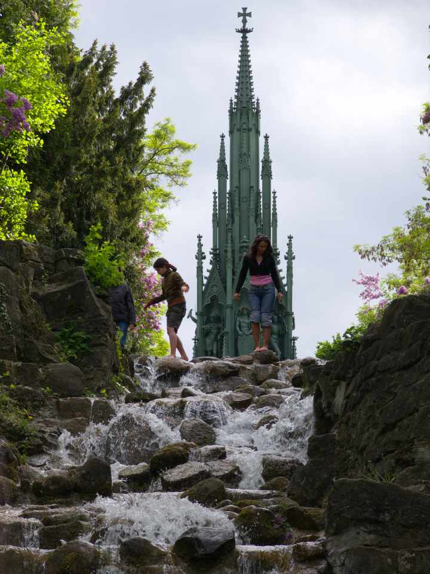
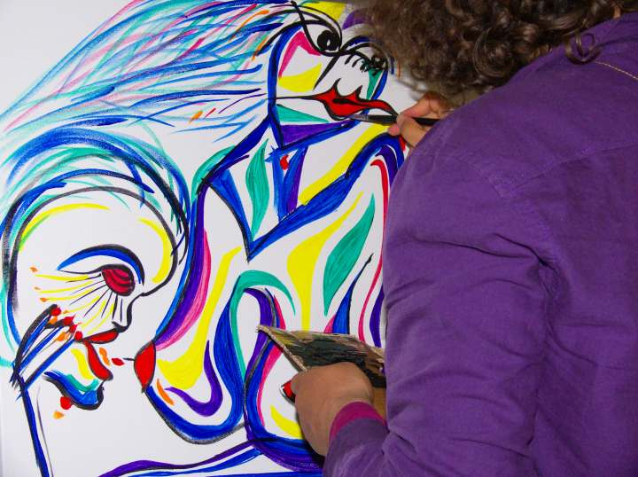
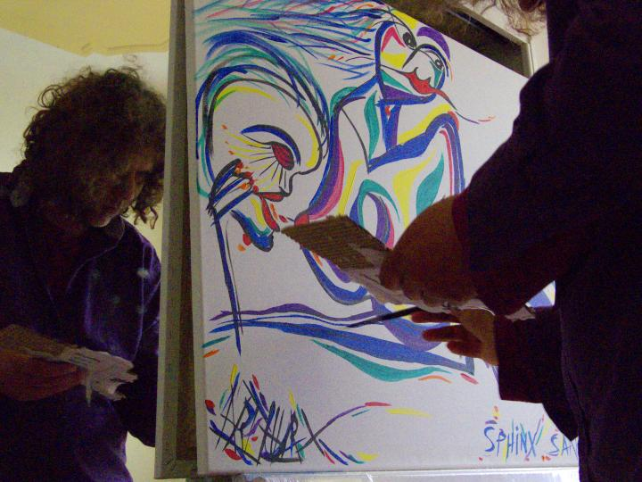

ArthurX in Berlin
Germany
May 2007
ArthurX in Berlin
Germany
May 2007


googlef5634a5470400f67
Tacheles
Tachales Berlin Squat Art HeadQuarters
ArthurX playing paino in Tachales.
Simon Burgel exhibited there and had a lot of friends visiting him.
One of the evenings I saw two hands playing the piano next to me
And I knew for shure that were not the hands of his friends,
Because the hands came out of a too slick suit.
After playing for some minutes I took a look at his face.
It was a Croatian Cellist, who worked in Frankfurt.
OK, we have no photo of the jam session.
A real pity.
Brandenburger Tor
Brandenburger Tor
Can you ommit that from a visit to Berlin?
It's a part of history.
I know it best from the films and documantaries,
Showing parades for Hitler.
When I am there, I remember those gloomy pictures
And I asked myself can I paint this
without making reference to that sad period in history?
So I thought I needed to draw the ghosts of the victims.
There are many victims: Jews, Russians, Poles,
Philosophers, Poets, Women, Baby's, Children
And Yes, even the Germans were victims.
A painting is not about how it could happen
or if it could happen again.
A painting is about emotions and feelings.
And I'm quite happy to see that the ghosts are not
that angry at all.
I mean it would be the most horrible thing to be a victim
and even have to be angry in the later life.
But it is a sad, sad story.


Charlottenburg
Schloss CharlottenBurg
This statue stands atop of the schloss.
With the naked eye the statue is not good visible.
But here on the photo you see clearly that it's not good sculpture.
It's the body and face of young boy.
They have cut off his penis and replaced that by two breasts.
It is a transsexual operation avant la lettre.
But statue is high enough so that no king ever complained.
Schloss CharlottenBurg in the making
The statues that ring the facade
are a bit increased in size,
so that it starts to look like a party on the roof.
Schloss CharlottenBurg Garden
The garden was of real strict design.
But the real design was only visible on Google Maps
There were a kind of drawings with black and white pebbles.
At home I added the grass green and old pink colors.
I had forgotten them.
We stayed with an old young landlady.
This is Ingo,
He stayed in the room next to us and worked for the stock exchange.
He almost wanted to buy the painting
but he rather kept shares of Ford Motor Company.
I tried to convince him that it is just a cyclical stock.
He went by bus to bring the painting,
so we could bike.
Bikes are nice but not for carrying paintings.

We had the bikes in Berlin.
You certainly see a city in a different view,
when you bike all the way around.
OK, we parked the bike against the trash can.
It looks solid, it is solid, it sounds solid.
Cast iron.
And it was morning,
so the local park gardner started his round
emptying all those oversized
garbage bins.

Peacock
Countess Herzogin
Röttenbörgh von Klein.
This is the beginning of the painting.
I wanted to work out a sketch of some time ago.
But it turned out to be another beast.
After some time I gathered it looked more like our landlady.
Later I was sure:
This was Countess Herzogin Röttenbörgh von Klein.
She had a pride that would make every Peacock shiver away in shame.
And even the amount of lipstick.
Acutally she was quite friendly.
But the pretention she had to uphold
turned her somehow into a nervous peacock
with a small twitch at the corner of her lips.
The most remarkable was that she went every day out for dinner.
Round 4 o'clock she left the home,
And my guess is that she spent all the time networking.
A real commercial wonder.
The other thing was that every room had at least two mirrors.
Not really amasing if you take the special care for appearances into account.
But on these photo's you see the benefit.

Sphinx Sans Souci
Potsdam
Sphinx Sans Souci
I know it is my own failure,
and there are no excuses at all,
but I could not find someone to make a portrait of.
We had been in cafe's for whole nights,
Walked up and down all streets of Berlin.
I could find no-one.
There was an interesting pharmaciste,
One evening a studente of Swiss came sitting next to me,
I was too late to make a sketch,
I was just talking and no thinking at all.
And she was kissing her Italian boyfriend intensively,
having only a weekend to spend,
I didn't dare to intrude.
Why am I so polite? and too shy?
You know how it works normally.
Elizabeth asks if I can make a sketch.
Or better no asking at all.
So here as a last resort
I turned to making a sketch
of dead stone cold creature.
Thinking longer about this matter of intense tristesse,
I think the problem lays in the lack of churches in Berlin.
Usually on holiday one meets a church and enters,
and lights two candles,
One for the beautiful girls one has met and one for the girls one will meet.
And as there are no churches in Berlin,
No candles were lid
And there was no divine providence
Maybe next time in Berlin
I will go to the most repulsive church
and just light the two candles.
You see the dark beautiful strong clouds?
Summer can be great.
But why did I carry the whole day two virgin canvasses,
The whole day being afraid, they would be smurred with mud?
Right before sketching the sphinx,
She walked in front,
It was the last change,
But see,
she only had eyes for the tourist guide in her hands.
Looking to this photograph,
I remember the moment,
It was just starting to rain,
I moved to the wide umbrella of a platane,
The lane was lined,
She walked fast away.
No running after her to ask for a sketch,
Just stick to the stonen sphinx.



Neue Synagogue
One of the most remarkable buildings in Berlin is the synagogue.
It is visible from many parts in the center.
So we had seen it shine
with it's oinion shaped dome
Long before we arrived there.
It is at the same street as the Tachales.
I also added the ghosts to the synagogue.
Where would you be waiting,
if you had a lot of time?
Hanging over the shoulder of the dome,
Looking into the street,
Where the hookers wait to lure their prey.
Action, Action, Action.
Here you see the black lines.
They include the neighbouring house.
It later disappears, behind the colors of the ghosts.
Berlin Feb 2008
Opening A.R. Penck at the Julius Werner Gallery, Berlin
Julius Werner and friend
Arthur and Sascha, the paparazzi photographer, we met at the opening.
This time we discoverd East Berlin: Mitte, Prenzlauer Berg
Sketch of the girl working in the zimmercafe at the Veteranenstrasse
Very good soup for lunch and "Sachertorte".
Portrait sketch of the girl of the zimmercafe
Zimmercafe Veteranenstrasse, tourists who came in couldnt
understand that there guide found it real Berlin.
A real surprise was "Das Amtsgericht von Mitte",
you can bid there for cheap houses at the auction,
from people, who got broke.
Berlin, Wachauerstrasse
At the former border between East and West Berlin,
you still can watch this
"BaumHaus". We don't know for how long,
it has to be on Unesco world heritage.
Better for the tourism in Berlin.
Two older turkish people living there with a garden with vegetables.
Befor the falling of the wall it was no-mans land.